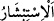

Bütün bu anlatılanları anladınsa, fayda vermeyecek bu sebepleri bırakıp Allah’a dön.
Bu da ancak îmânın kemâli ve takvâ ile mümkündür.
45. Allah, tek olarak anıldığı zaman, âhirete inanmayanların içlerine sıkıntı basar.
Ama Allah’tan başkası anıldığı zaman hemen yüzleri güler.
“Allah, tek olarak” müşriklerin ilâhları olmaksızın “anıldığı zaman, âhirete
inanmayanların içlerine sıkıntı basar.” Kıyâmet gününü tasdik etmeyenlerin kalbleri
daralır ve bundan hoşlanmaz.
“
” nefsin hoşuna gitmeyen bir şeyden uzaklaşması demektir. “
” ise yüzü
ekşidi, demektir. “
” da yüzü buruşacak kadar kalbin öfke ve gam ile dolması
demektir. Gönül daralmasının had safhası budur. Şu halde âyetteki bu ifâdede onların
çirkin durumları abartılı olarak anlatılmış olmaktadır.
“Ama Allah’tan başkası” yâni putlar tek olarak ya da Allah’la birlikte “anıldığı
zaman hemen yüzleri güler.” Sevinirler ve memnuniyetleri yüzlerinden okunur. Bu,
ilahlarına aşırı bağlanmaları ve Allah’ı unutmaları sebebiyle ortaya çıkan bir sevincin
neticesidir. “
” gönlün, yüzün derisi yayılıp açılacak kadar sevinçle dolmasıdır.
Bu sevinmenin had safhasıdır. Yine bu ifâdede onların çirkin halleri abartılı olarak
anlatılmış olmaktadır.
Mânâ şöyledir: O zaman onlar Hakk’ı unutup bâtılla meşgul olmalarından dolayı
mutlu olurlar. Ama mü’minin işi bunun aksinedir. Allah’ı anmaktan mutlu, mâsivâyı
anmaktan gamgin olurlar.
Adını işittiğimde gönül mutluluktan dirilir
Senin ikbalin ile talihim güler
Senin dışında nerede bir söz açılsa
Gönlüm gamla dolar, dağılır
Hikâye edilir ki bazı sâlihler, Râbiatü’l-Adeviyye’nin yanında dünyadan bahsettiler
ve dünyayı kötülediler. Râbia: “Kim bir şeyi severse onu çok anar.” dedi.
Bilesin ki bu müşrikler tıpkı çocuklar gibidirler. Çocuklar topraktan atlarla, tahtadan
aslanlarla, oyun ve eğlenceden ibâret olan şeyleri aralarında konuşmakla sevindikleri
gibi, putperestlerin de düşünceleri sûret ve şekillerle sınırlı olduğu için durumları
aynıdır. Allah’ı tanımayan hiçbir kalp Allah’ı zikre ünsiyet etmez, onda huzur bulmaz,
onunla sevinmez. Böyle olunca da Hakk’ın meskeni olamaz!
Allah Teâlâ ile Mûsâ (a.s.)’a şöyle vahyetti: “Ey Mûsâ, senin evinde seninle birlikte
ikamet etmemi ister misin?” Bunu duyan Mûsâ (a.s.) secdeye kapanarak: “Yâ Rabbi,